El británico David Coulthard ( McLaren MP4/15 Mercedes ) ha dominado una jornada anodina de entrenamientos libres del Gran Premio de Francia , en la que tan solo ha rodado nueve vueltas , que le han sido suficientes para dejar al alemán Michael Schumacher ( Ferrari F1-2000 ) a dos décimas de segundo.
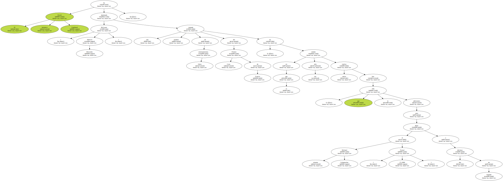Pedro de la Rosa ( Arrows A21 Supertec ) ha finalizado en decimosexta posición y Marc Gené ( Minardi M02 Fondmetal ) en vigésima , después haber sido de los pilotos que más han rodado para poner sus coches a punto.
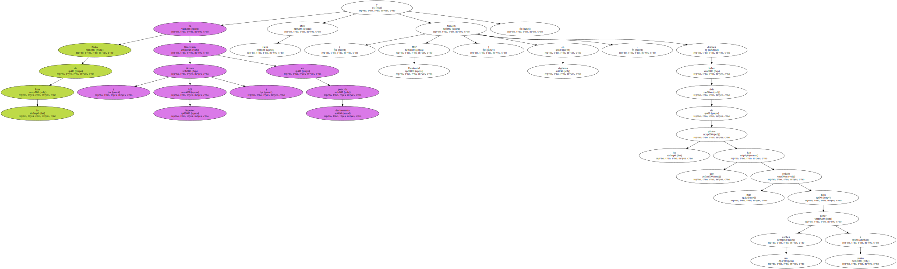La única escudería que la semana pasada no estuvo en este circuito para hacer pruebas fue Minardi y eso le está costando muy caro , sobre todo en un circuito en el que los neumáticos se desgastan mucho y es difícil por ese motivo poner a punto los coches , ya que para el gran Premio el número de neumáticos está limitado a siete juegos y conviene dejar el mayor número posible nuevos , o casi , para la carrera del domingo.
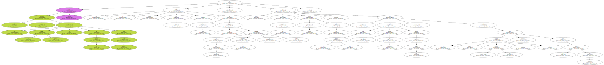Hoy Marc Gené ha tenido que utilizar dos juegos para hacer el trabajo que otras escuderías han hecho en tres días y con la posibilidad de cambiar las ruedas cada quince o veinte vueltas.
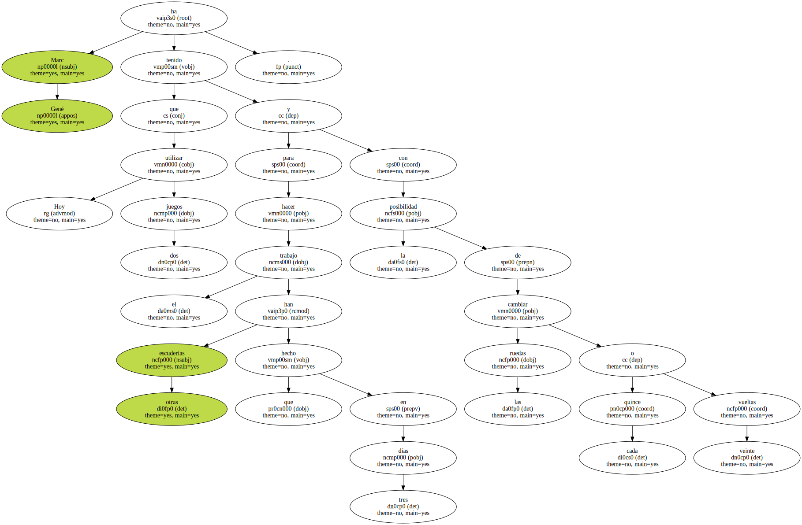Ha logrado mejorar mucho el coche , pero en esta ocasión las diferencias en los tiempos pueden ser mucho mayores que en otros circuitos , además de correr el riesgo de no tener ruedas suficientes para la carrera del domingo , en la que , al menos , se harán dos paradas , si perdura el calor que ha hecho hoy.
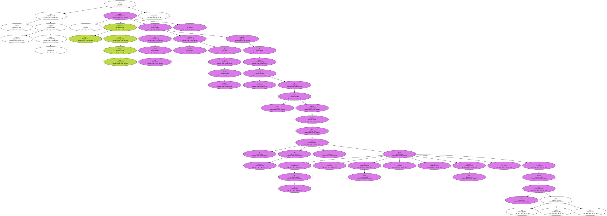De la Rosa sí estuvo la semana pasada probando en este circuito , pero el accidente que sufrió su compañero de equipo en la primera jornada , el holandés Jos Verstappen , trastocó todos los planes del equipo Arrows , que tuvo que mandar un coche nuevo desde Inglaterra.
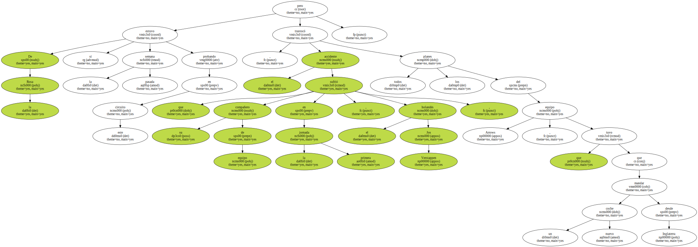Hoy De la Rosa ha rodado más de lo que hubiera querido para completar la puesta a punto.
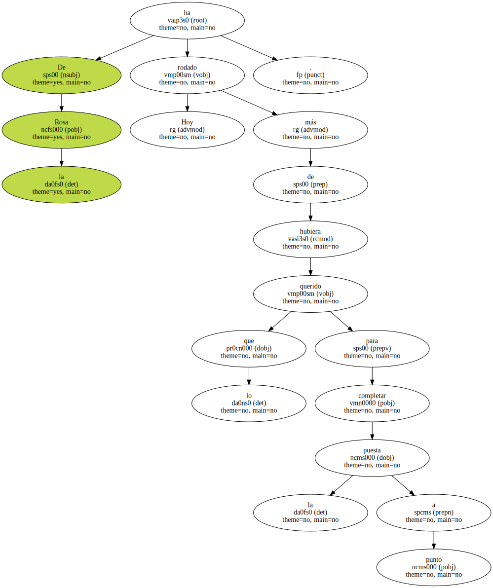Ha probado nuevas relaciones de la caja de cambios y con el problema que representan los neumáticos , hasta mañana no podrá comprobar si todas las mejoras introducidas marchan en la dirección correcta para volver a situarse entre los diez primeros en la formación de salida.
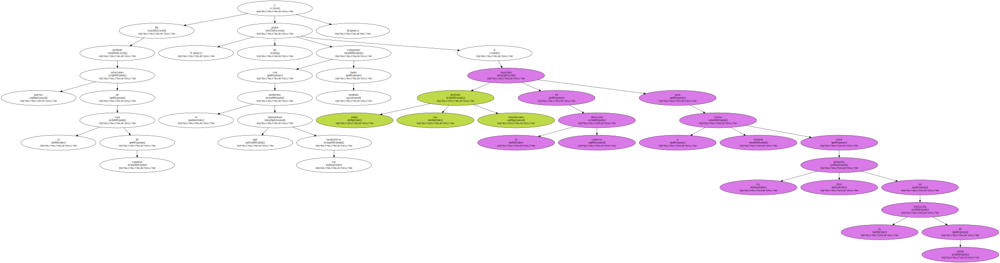David Coulthard ha logrado el mejor tiempo , pero no ha tenido una jornada muy afortunada.
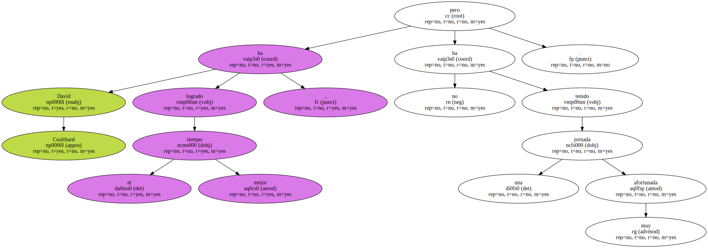Por la mañana solo dio una vuelta para comprobar si el coche funcionaba correctamente y se encontró que no era así , la bomba de gasolina fallaba y para cambiarla los mecánicos tuvieron que desmontar el motor del chasis.
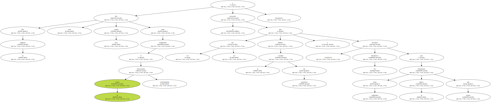Por la tarde salió al principio , marcó el mejor tiempo y se tuvo que volver a detener , porque tenía una fuga de aceite y , de nuevo , los mecánicos tuvieron que separar el motor del chasis.
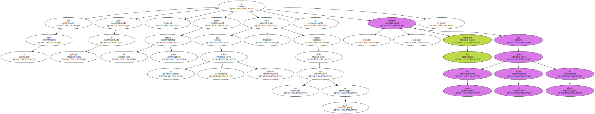A Coulthard no le ha hecho falta ahorrar neumáticos , ya que los problemas mecánicos se han encargado de hacerlo.

Si mañana Coulthard no sufre más incidencias estará en una situación de ventaja sobre el resto de los pilotos junto con el alemán Heinz-Harald Frentzen ( Jordan EJ10 Mugen Honda ) y el italiano Giancarlo Fisichella ( Benetton B200 Playlife ) , que han sido los que menos han rodado , siete y nueve vueltas respectivamente.
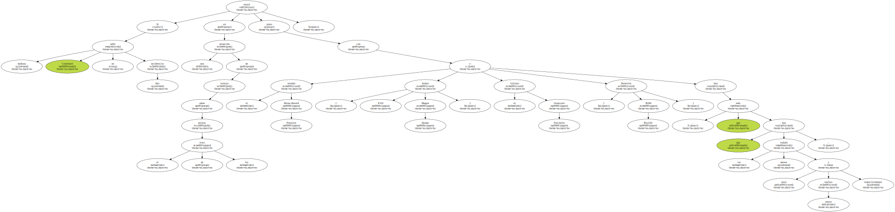Tras Coulthard se ha situado el líder del mundial el alemán Michael Schumacher ( Ferrari F1-2000 ) que ha rodado bastante , veinticinco vueltas , para poner el coche a punto para la carrera del domingo.
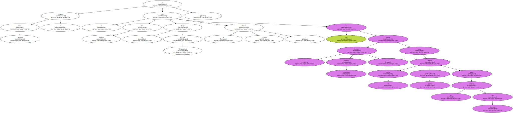Ferrari ha probado unas chimeneas en los pontones laterales para canalizar la salida del aire caliente de los radiadores al estilo de los Mclaren , que seguramente se utilizarán para la carrera del domingo , junto con un nuevo alerón trasero y otros retoques aerodinámicos.
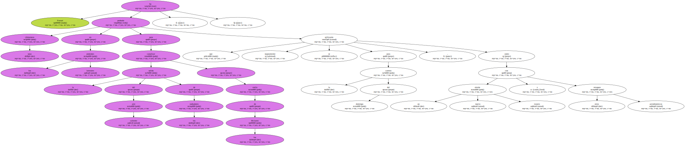Ferrari ha probado unas chimeneas en los pontones laterales para canalizar la salida del aire caliente de los radiadores al estilo de los Mclaren , que seguramente se utilizarán para la carrera del domingo , junto con un nuevo alerón trasero y otros retoques aerodinámicos.
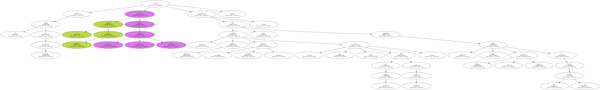En una jornada libre de problemas el finlandés Mika Hakkinen ha marcado el tercer mejor tiempo y el brasileño Rubens Barrichello ( Ferrari F1-2000 ) , que por la mañana no ha salido a la pista , ha sido cuarto , completando el habitual dominio de Mclaren y Ferrari en todos los Grandes Premios.
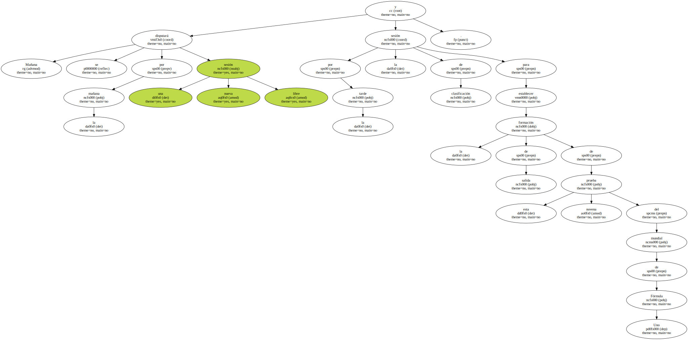Mañana se disputará por la mañana una nueva sesión libre y por la tarde la sesión de clasificación para establecer la formación de salida de esta novena prueba del mundial de Fórmula Uno.
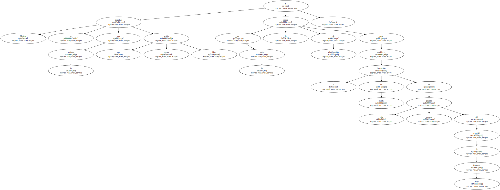